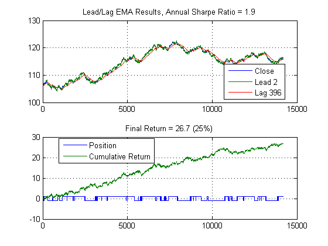
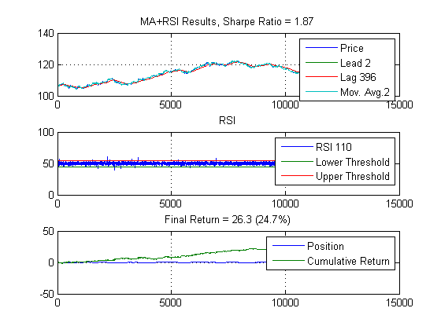
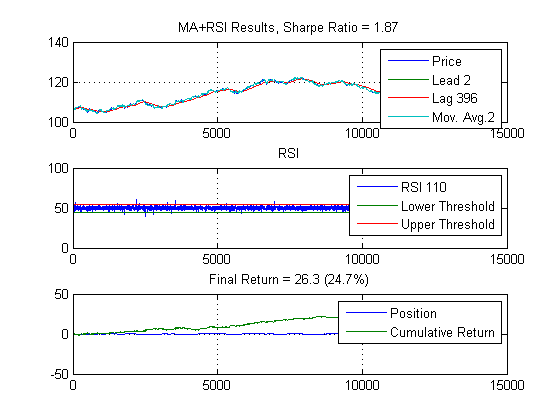
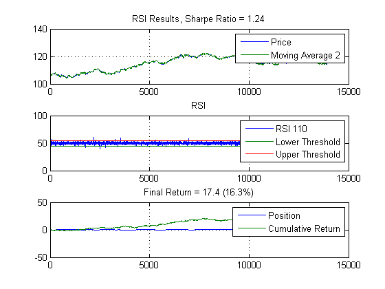

Algorithmic Trading with MATLAB®: Profiling and C-Code Generation
This demo shows how to profile your code to find the performance bottlenecks, or areas for improvement, as well as the capability to generate C-Code from MATLAB.
Copyright 2010, The MathWorks, Inc. All rights reserved.
Contents
Load in the data
Bund future data - 1 minute intervals
load bund1min
step = 30;
annualScaling = sqrt(250*60*11/step);
cost = 0.01;
BundClose = data(1:step:end,end);
Profile the MARSI code
Let's find the slowest part of the MARSI code.
N = 2; M = 396; thresh = 55; P = 2; Q = 110; profile on marsi(BundClose,N,M,[P Q],thresh,annualScaling,cost) profile viewer result = profile('info'); profile off % movavg was the bottleneck, take a look TotalTime for it result.FunctionTable(4)
ans =
CompleteName: [1x56 char]
FunctionName: 'movavg'
FileName: 'C:\MATLAB\R2010b\toolbox\finance\finance\movavg.m'
Type: 'M-function'
Children: [0x1 struct]
Parents: [3x1 struct]
ExecutedLines: [26x3 double]
IsRecursive: 0
TotalRecursiveTime: 0
PartialData: 0
NumCalls: 8
TotalTime: 0.5145
  
 Improve movavg code and re-profile
Use the function in movavg2.m to shadow the financial toolbox movavg function and profile again. Note that we are using embedded MATLAB to generate the mex (MATLAB Executable) file and will later use it to generate portable C-code.
system('copy movavg2.m movavg.m') type movavg profile on marsi(BundClose,N,M,[P Q],thresh,annualScaling,cost) profile viewer result2 = profile('info'); result2.FunctionTable(4)
1 file(s) copied.
ans =
0
function [lead,lag] = movavg(P,M,N,type) %#eml
% moving average, exponentially weighted.
%%
% Copyright 2010, The MathWorks, Inc.
% All rights reserved.
if type ~= 'e'
error('MOVAVG:TYPE','This function only supports exponential moving averages')
end
L = length(P);
lead = zeros(size(P));
lag = lead;
ws = 2/(M+1);
wl = 2/(N+1);
lead(1) = P(1);
lag(1) = P(1);
% The for loop approach (slow for small-medium sized data series)
for i = 2:L
lead(i) = lead(i-1) + ws*(P(i) - lead(i-1));
lag(i) = lag(i-1) + wl*(P(i) - lag(i-1));
end
ans =
CompleteName: 'C:\MATLAB\Webinars\AlgoTrading2010\movavg.m>movavg'
FunctionName: 'movavg'
FileName: 'C:\MATLAB\Webinars\AlgoTrading2010\movavg.m'
Type: 'M-function'
Children: [0x1 struct]
Parents: [3x1 struct]
ExecutedLines: [12x3 double]
IsRecursive: 0
TotalRecursiveTime: 0
PartialData: 0
NumCalls: 8
TotalTime: 0.4505
 Nearly 7% speed up in recoding the 2 for loops to 1 for loop.
speedUp = result.FunctionTable(4).TotalTime/result2.FunctionTable(4).TotalTime
speedUp =
1.1420
Now lets compile it into a mex file and run it again
Note that you will need to set up your compiler first (through mex - setup)
emlmex movavg.m -eg {BundClose,N,M,'e'} profile on marsi(BundClose,N,M,[P Q],thresh,annualScaling,cost) profile viewer result3 = profile('info'); result3.FunctionTable(4)
ans =
CompleteName: [1x55 char]
FunctionName: 'movavg'
FileName: 'C:\MATLAB\Webinars\AlgoTrading2010\movavg.mexw64'
Type: 'MEX-function'
Children: [0x1 struct]
Parents: [3x1 struct]
ExecutedLines: [0x3 double]
IsRecursive: 0
TotalRecursiveTime: 0
PartialData: 0
NumCalls: 8
TotalTime: 0.0150
A 32X speedup over for loop, and 30X speedup over vectorized version!
speedUpFor = result.FunctionTable(4).TotalTime/result3.FunctionTable(4).TotalTime speedUpVect = result2.FunctionTable(4).TotalTime/result3.FunctionTable(4).TotalTime
speedUpFor = 34.2615 speedUpVect = 30.0013
Generating portable C-code
You can also generate portable C-code to target a different hardware platform or use the C-code in a real-time environment. Here is how to do it for the movavg function (I leave marsi as an exercise for interested readers).
emlc -report movavg.m -eg {BundClose,N,M,'e'}
Compilation successful: To view the compilation report, open('C:\MATLAB\Webinars\AlgoTrading2010\emcprj\mexfcn\movavg\html\index.html').
The generated C-code is in the emcprj folder. Here is the listing of the entry point:
type emcprj\mexfcn\movavg\movavg.c
/*
* movavg.c
*
* Embedded MATLAB Coder code generation for function 'movavg'
*
* C source code generated on: Mon Nov 22 20:50:43 2010
*
*/
/* Include files */
#include "rt_nonfinite.h"
#include "movavg.h"
/* Type Definitions */
/* Named Constants */
/* Variable Declarations */
/* Variable Definitions */
static emlrtRSInfo eml_emlrtRSI = { 8, "movavg", "C:/MATLAB/Webinars/AlgoTrading2010/movavg.m" };
static emlrtRSInfo eml_b_emlrtRSI = { 10, "error", "C:/MATLAB/R2010b/toolbox/eml/lib/matlab/lang/error.m" };
static emlrtMCInfo eml_emlrtMCI = { 10, 7, "error", "C:/MATLAB/R2010b/toolbox/eml/lib/matlab/lang/error.m" };
/* Function Declarations */
static void m_error(const mxArray *eml_b, const mxArray *eml_c, emlrtMCInfo *eml_location);
/* Function Definitions */
static void m_error(const mxArray *eml_b, const mxArray *eml_c, emlrtMCInfo *eml_location)
{
const mxArray *eml_pArrays[2];
eml_pArrays[0] = eml_b;
eml_pArrays[1] = eml_c;
emlrtCallMATLAB(0, NULL, 2, eml_pArrays, "error", TRUE, eml_location);
}
void movavg(const real_T eml_P[14173], real_T eml_M, real_T eml_N, char_T eml_type, real_T eml_lead[14173], real_T eml_lag[14173])
{
const mxArray *eml_y;
static const int32_T eml_iv0[2] = { 1, 11 };
const mxArray *eml_m0;
static char_T eml_cv0[11] = { 'M', 'O', 'V', 'A', 'V', 'G', ':', 'T', 'Y', 'P', 'E' };
const mxArray *eml_b_y;
static const int32_T eml_iv1[2] = { 1, 55 };
static char_T eml_cv1[55] = { 'T', 'h', 'i', 's', ' ', 'f', 'u', 'n', 'c', 't', 'i', 'o', 'n', ' ', 'o', 'n', 'l', 'y', ' ', 's'
, 'u', 'p', 'p', 'o', 'r', 't', 's', ' ', 'e', 'x', 'p', 'o', 'n', 'e', 'n', 't', 'i', 'a'
, 'l', ' ', 'm', 'o', 'v', 'i', 'n', 'g', ' ', 'a', 'v', 'e', 'r', 'a', 'g', 'e', 's' };
int32_T eml_i;
real_T eml_ws;
real_T eml_wl;
/* moving average, exponentially weighted. */
/* % */
/* Copyright 2010, The MathWorks, Inc. */
/* All rights reserved. */
if(eml_type != 'e') {
EMLRTPUSHRTSTACK(&eml_emlrtRSI);
EMLRTPUSHRTSTACK(&eml_b_emlrtRSI);
eml_y = NULL;
eml_m0 = mxCreateCharArray(2, eml_iv0);
emlrtInitCharArray(11, eml_m0, eml_cv0);
emlrtAssign(&eml_y, eml_m0);
eml_b_y = NULL;
eml_m0 = mxCreateCharArray(2, eml_iv1);
emlrtInitCharArray(55, eml_m0, eml_cv1);
emlrtAssign(&eml_b_y, eml_m0);
m_error(eml_y, eml_b_y, &eml_emlrtMCI);
EMLRTPOPRTSTACK(&eml_b_emlrtRSI);
EMLRTPOPRTSTACK(&eml_emlrtRSI);
}
for(eml_i = 0; eml_i < 14173; eml_i++) {
eml_lead[eml_i] = 0.0;
eml_lag[eml_i] = 0.0;
}
eml_ws = 2.0 / (eml_M + 1.0);
eml_wl = 2.0 / (eml_N + 1.0);
eml_lead[0] = eml_P[0];
eml_lag[0] = eml_P[0];
/* The for loop approach (slow for small-medium sized data series) */
for(eml_i = 2; eml_i < 14174; eml_i++) {
eml_lead[eml_i - 1] = eml_lead[eml_i - 2] + eml_ws * (eml_P[eml_i - 1] - eml_lead[eml_i - 2]);
eml_lag[eml_i - 1] = eml_lag[eml_i - 2] + eml_wl * (eml_P[eml_i - 1] - eml_lag[eml_i - 2]);
emlrtBreakCheck();
}
}
/* End of Embedded MATLAB Coder code generation (movavg.c) */